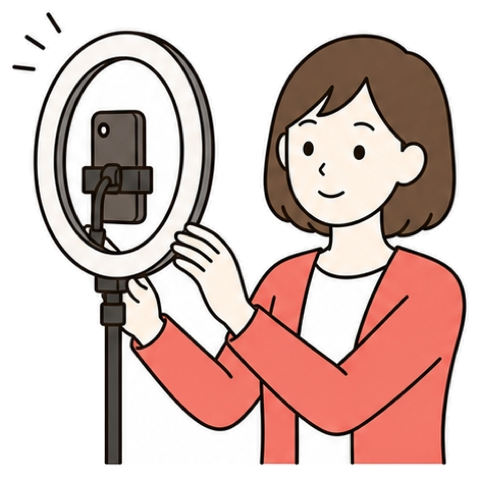
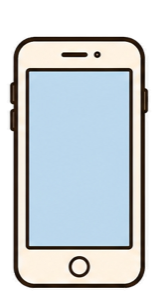

あなたが頼むと、Museがつないだアプリの中で作業します

ポイント利用者ごとに分かれているので、ほかの人の作業とは混ざりません。スマホやパソコンの中のファイルはMuseから見えないので、⑦の章（Claudeとつなぐ）では、両方から見えるGitHub（ファイルを置いておけるサービス）を置き場所に使います。
大事な操作の前で、いったん止まってあなたに聞いてきます
送信・購入・投稿の前に、止まって聞いてくる
外に出す情報を、別のAIが確認する
パスワードとカードは、Museからは見えない
何をしたか、あとから一覧で見られる
ポイントどのアプリをつなぐか、どこまで許すかは、自分で決められます。ただし「常に許可」を選んだ作業だけは、次から聞かずに進みます。
投稿や送信の前には、この3つから選ぶ画面が出ます

Museからの確認このストーリーズを投稿していいですか？
今回だけOK。次も同じように聞いてくる
最初はこれ次からは聞かずに進む
慣れてから投稿しない。直してほしい所を伝える
気になったらポイント日本の実演動画では、リールを出すときに「投稿の許可」と「インスタの中を見る許可」の2回を聞かれていました。「常に許可」は便利ですが、見ていないうちに進むので、慣れるまでは「このタスクだけ」で使います。
使える量に週ごとの上限があり、足りない人だけ有料にします（2026年10月時点の情報）
Metaの発表と、実際に使った人の画面で確かめた内容です
▼
使った人の報告から、気をつけるところが見えてきています
ポイント1つ目は任せすぎの失敗、2〜4つ目は今のMuseの限界です。AIエージェントを比べた日本の発信者は「最初の1週間はメールの要約と予定の整理だけ。カードは任せない」と自分のルールを決めていました。